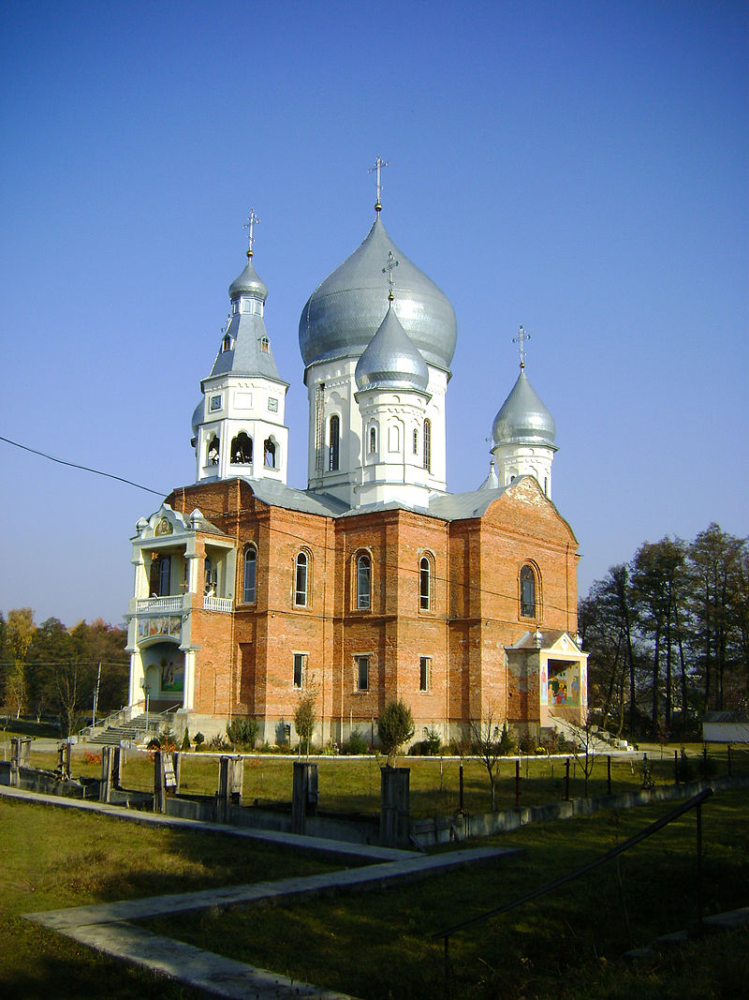

Далі буде коротко про культуру
На території району збереглися руїни Бронецького і Довжанського замків,
а також городища в Арданові, Білках та на горах Бодулів та Стремтура, що
на околицях Іршави.
Їхня історія пов'язана зі стародавньою Римською імперією.
-
Замок в урочищі Бодулів
- Кіть хочете більше пак приїзжайте, но будеме раді видіти
- Можете там далі і на Солотвино чи у Берегово, уп'єме вина
- Но так ідеме далі про культуру
- Місцева знаменитість
-

Свято-Іллінський храм
Свя́то-Іллі́нський храм — православний храм, у центральній частині міста, він є третім за місткістю після Ужгородського Кафедрального собору та Мукачівської церкви такий велкикй шо (на все село).